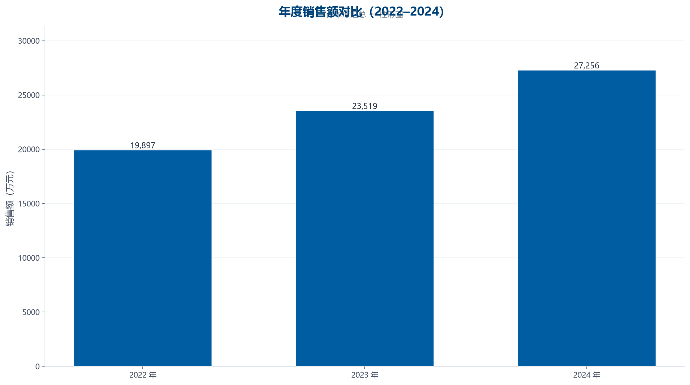
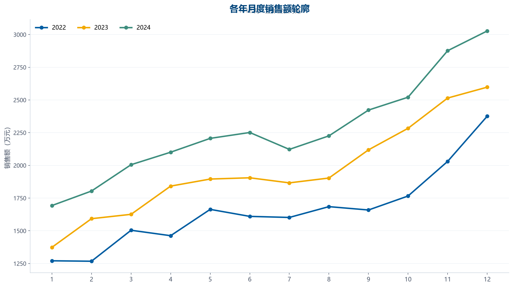
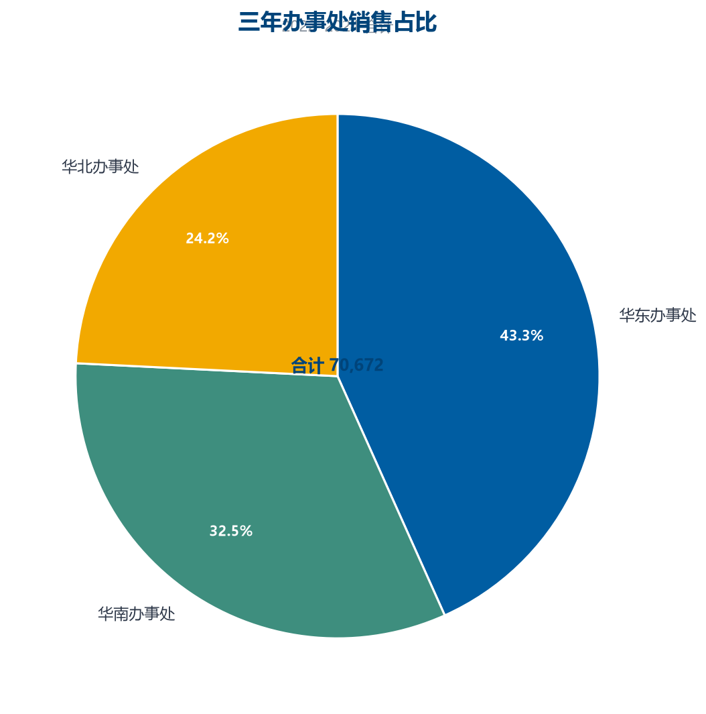

① 需求 · 先明确问题，再动手分析（DIG 起点）
Q
要回答的业务问题
这家企业三年（2022–2024）的销售表现如何？增长还是下滑？各办事处贡献多大？下一步经营重点放在哪？
D
数据来源
3 年 × 12 月 × 3 办事处 = 108 行：年份 / 月份 / 办事处 / 销售额(万元)（示例数据按课程描述构造）
G
希望的结果
产出一份完整分析报告：分年度分析 → 年度比较 → 总体汇总 → 核心发现 → 结论与建议
② D 描述数据 · 先理解数据，再分析
记录数
108
行
字段数
4
列
年份跨度
3 年
2022~2024
办事处
3 个
华东/华北/华南
| 字段 | 类型 | 缺失 | 缺失率 | 唯一值 | 样例 |
|---|---|---|---|---|---|
| 年份 | 数值 | 0 | 0.0% | 3 | 2022、2023 … |
| 月份 | 数值 | 0 | 0.0% | 12 | 1、2 … |
| 办事处 | 文本 | 0 | 0.0% | 3 | 华东办事处、华南办事处 … |
| 销售额(万元) | 数值 | 0 | 0.0% | 108 | 540.2、393.4 … |
| 年份 | 月份 | 办事处 | 销售额(万元) |
|---|---|---|---|
| 2022 | 1 | 华东办事处 | 540.2 |
| 2022 | 1 | 华南办事处 | 393.4 |
| 2022 | 1 | 华北办事处 | 337.2 |
| 2022 | 2 | 华东办事处 | 591.4 |
| 2022 | 2 | 华南办事处 | 398.5 |
③ I 挖掘数据 · 分年度 → 比较 → 汇总
1
分年度分析
先看每一年：总额多少、哪个月最高/最低，形成「年度画像」。
| 年份 | 销售总额(万元) | 最佳月份 | 最低月份 |
|---|---|---|---|
| 2022 | 19,896.9 | 12 月 | 2 月 |
| 2023 | 23,518.8 | 12 月 | 1 月 |
| 2024 | 27,255.9 | 12 月 | 1 月 |
2
年度比较（同比）
同比增速 = (本年 − 上年) / 上年，判断增长势头。
2023 同比增速(Y₂₀₂₃ − Y₂₀₂₂) / Y₂₀₂₂
代入(23,518.8 − 19,896.9) / 19,896.9
结果+18.2%
解释2023 年较 2022 年增长 18.2%。
2024 同比增速(Y₂₀₂₄ − Y₂₀₂₃) / Y₂₀₂₃
代入(27,255.9 − 23,518.8) / 23,518.8
结果+15.9%
解释2024 年较 2023 年增长 15.9%。
| 月份 | 2022 年 | 2023 年 | 2024 年 |
|---|---|---|---|
| 1 | 1,270.8 | 1,373.7 | 1,693 |
| 2 | 1,267.4 | 1,592.6 | 1,803.9 |
| 3 | 1,504.2 | 1,625.9 | 2,005.2 |
| 4 | 1,462.6 | 1,841.6 | 2,100.7 |
| 5 | 1,663.8 | 1,895.6 | 2,206.5 |
| 6 | 1,610.2 | 1,905.2 | 2,251.4 |
| 7 | 1,602.1 | 1,866.4 | 2,122.2 |
| 8 | 1,684.7 | 1,903.3 | 2,225.6 |
| 9 | 1,659 | 2,118.7 | 2,422.7 |
| 10 | 1,765.9 | 2,283.4 | 2,521 |
| 11 | 2,030.4 | 2,514.6 | 2,876.3 |
| 12 | 2,375.8 | 2,597.8 | 3,027.4 |
3
总体汇总（三年合计）
把三年数据汇总：总销售额、各办事处贡献度，看结构。
三年销售总额Σ 各年总额
代入19,896.9 + 23,518.8 + 27,255.9
结果70,671.6
解释三年累计销售 70,671.6 万元。
| 办事处 | 三年销售额(万元) | 占比 |
|---|---|---|
| 华东办事处 | 30,592.4 | 43.3% |
| 华南办事处 | 22,966.9 | 32.5% |
| 华北办事处 | 17,112.3 | 24.2% |
④ 图表 · 年度柱 / 月度折线 / 占比饼

看整体趋势：三年逐年上升还是波动
核心发现：三年逐年增长，累计增长 34.1%（口径见下）

看年内节奏：峰值月、低谷月、季节性
核心发现：每年的高峰月与低谷月相对稳定

看结构：哪个办事处是基本盘
核心发现：华东办事处占比最高（43.3%）
⑤ 核心发现与结论
事实逐年增长
三年销售额分别 19,896.9 / 23,518.8 / 27,255.9 万元，同比增速 +18.2% / +15.9%，三年累计 70,671.6 万元。
分析增长主要靠华东办事处拉动
华东办事处 贡献 43.3% 的销售额，华南办事处 为 32.5%；结构较集中，抗风险能力一般。
推测存在稳定季节规律
峰值月（12 月）与低谷月（1 月）三年基本一致，推测受行业季节与促销周期影响。
建议保基本盘 + 补短板
继续巩固 华东办事处 市场；针对 华北办事处（占比 24.2%）制定专项提升计划；在低谷月（1 月）主动做清仓/蓄客活动，平滑季节波动。
注意事项
结论说明：本报告基于示例数据（按课程描述构造），结论用于演示分析框架；替换为真实数据后需重新计算全部指标。
⑥ 推荐 Prompt · 学生可复制后自行用 AI 复现同款分析
推荐 Prompt（学生可复制此提示词，自行用 AI 复现同款分析）
我有一份某企业 2022–2024 年销售数据（CSV：年份、月份、办事处、销售额(万元)，共 108 行）。请：1) 分年度分析：每年总额与最佳/最低月份；2) 年度比较：计算 2023、2024 年同比增速；3) 总体汇总：三年总额、各办事处占比；4) 用柱形图、折线图、饼图辅助说明；5) 输出一份结构化报告：核心发现（事实→分析→推测→建议）→ 结论。
学生验收要点：报告必须包含「分年度 / 年度比较 / 总体汇总 / 核心发现 / 结论」五个层次；增速用公式展示代入过程；结论必须有数据支撑。
⑦ QA 验证 · 数值复算 / 逻辑检查 / 输出一致性
| 检查项 | 说明 |
|---|
QA 验证：0 / 0 项检查通过